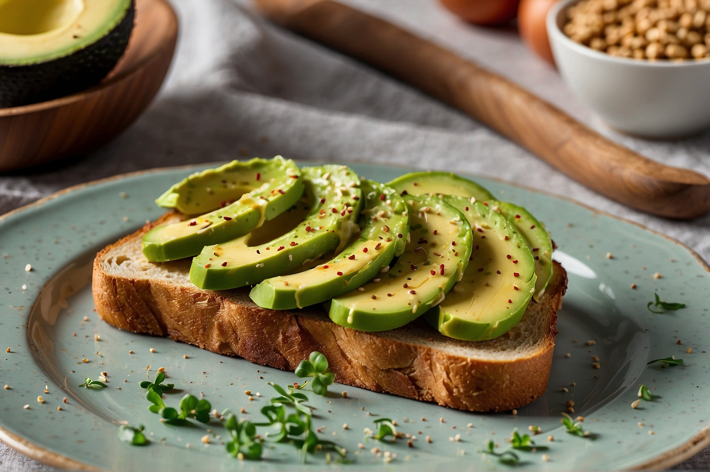

Avocado Toast
Ingredients:
- 1 ripe avocado
- 2 slices of bread of preference
- Salt and pepper
- Optional toppings: sliced tomatoes, red pepper flakes, crushed red pepper, sesame seeds, poached or fried egg, crumbled feta cheese, etc.
Procedure:
- Start by toasting your bread slices to your desired level of crispiness.
- While the bread is toasting, halve the avocado and remove the pit. Scoop out the avocado flesh into a bowl.
- Mash the avocado with a fork until it reaches your desired consistency.
- Season the mashed avocado with salt and pepper to taste. You can also add a squeeze of lemon juice if desired.
- Once the toast is done, spread the mashed avocado evenly onto each slice.
- Top the avocado toast with any additional toppings you desire, such as sliced tomatoes, red pepper flakes, sesame seeds, etc.
- Serve immediately and enjoy your delicious avocado toast!

Do you need further explication, or want a visual representation of how each of the steps are made? Watch the following cooking tutorial by Gordon Ramsay: Avocado Toast Tutorial